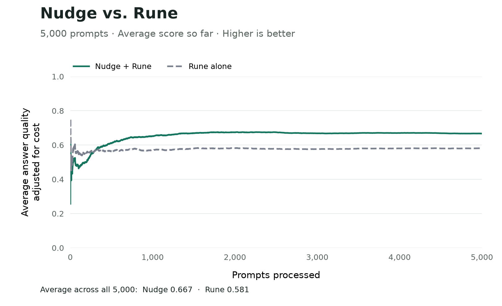

Your System One model makes a call. You say how it went. It picks better.
Nudge is a small Python library that sits on top of a System One model like Jev or Rune. Tell Nudge how a decision turned out — ticket resolved, sale closed, money saved — and it shifts future picks toward what worked. No fine-tuning. No training run. No GPUs. One file on disk.
It made a production model router 14.8% better
A router's job is picking which AI model should answer each prompt — cheap one, expensive one, somewhere in between. We took one built on Rune, an open-weights System One model, pointed it at 5,000 real prompts, and put Nudge on top. Score = how good the answer was, minus what it cost.

Three calls
ask() when you need a decision. feedback() whenever you find out how it went — an hour later, a week later, doesn't matter. learn() whenever you feel like it. Nothing changes until you call learn().
Here it is wired to a real System One model: Rune, served on your own GPU with surogate serve (the model card has the command). Jev speaks the same protocol; to use it instead, point URL at https://api.typesafe.ai/v1/systemone, send an Authorization: Bearer header, and set MODEL to jev-latest.
import json, urllib.request from nudge import Answer, Choice, Nudge, Question URL = "http://localhost:8000/v1/decisions" # surogate serve ./rune-v3 --port 8000 MODEL = "rune" # the id that GET /v1/models lists # What is being decided, and what you promise to report back. choice = Choice( name="support", situation="A support ticket and the conversation so far", actions={"answer": "Reply now", "escalate": "Hand to a person"}, feedback={"resolved": "1 if resolved, otherwise 0"}, ) def decide(state, questions): body = {"model": MODEL, "state": state, "questions": questions} request = urllib.request.Request(URL, json.dumps(body).encode(), {"Content-Type": "application/json"}) with urllib.request.urlopen(request, timeout=30) as response: return json.loads(response.read())["answers"] def head(q): # a Nudge question as a typed System One question if q.kind == "binary": return {"type": "noul", "instructions": q.prompt} if q.kind == "ordinal": return {"type": "score", "instructions": q.prompt, "criteria": list(q.levels)} return {"type": "choice", "instructions": q.prompt, "criteria": {str(i): c for i, c in enumerate(q.categories)}} def value(q, answer): # ...and its typed answer as the number Nudge wants if q.kind == "binary": return answer["noul"] if q.kind == "ordinal": return answer["score"] + 1 # scores are 0-based; Nudge levels run 1..5 p = {c: answer["probabilities"][str(i)] for i, c in enumerate(q.categories)} total = sum(p.values()) return {c: v / total for c, v in p.items()} class Rune: identity = MODEL + ":support-v1" # bump when the model or the prompts change def ask(self, state, questions): # The odds get their own request, so the questions Nudge asks # later can never quietly move your baseline. odds = decide(state, {"action": {"type": "choice", "instructions": choice.situation, "criteria": dict(choice.actions)}})["action"]["probabilities"] total = sum(odds.values()) heads = {q.name: head(q) for q in questions} answers = decide(state, heads) if heads else {} return Answer( probabilities={a: p / total for a, p in odds.items()}, features={q.name: value(q, answers[q.name]) for q in questions}, ) asked = [Question("repeat_issue", "Has this customer complained before?")] with Nudge(choice, store="support.db", model=Rune(), questions=asked) as policy: d = policy.ask(state="My order arrived damaged, second time this month") policy.feedback(d.id, resolved=1) # whenever you find out policy.learn() # whenever you want
That's the whole integration. No SDK, no wrapper framework — if your thing has an ask() that returns odds, Nudge will use it. The question at the bottom is one you wrote. To let Nudge write its own, pass a proposer= backed by a chat model (see docs/adapters.md); without one it learns from the baseline odds and your questions only.
Python 3.11+, NumPy, that's it. Nothing to deploy — Nudge runs inside your process and keeps what it learns in a SQLite file you own. Install with pip install nudge-policy from PyPI; you still import nudge. Source is on GitHub. For an offline demo with no model at all, clone the repo and run uv run python examples/support.py --store support.db.
What's actually going on
- Your System One model already has an opinion — some odds across the options. Nudge records them and uses them as one input among several.
- You report outcomes. Nudge keeps a small scorecard: for each option, is your System One model usually too confident here, or not confident enough?
- To tell one situation from another, it asks your System One model short questions about the same text it already read — "Has this customer complained before?" — and uses the answers as columns in that scorecard.
- It writes those questions itself, tests each one against outcomes it held back, and throws away the ones that don't predict anything. Six good questions is a normal end state, not six hundred.
- Then it picks. It draws 64 plausible scorecards from what it has seen, lets each one vote for the best option, and mixes in a 5% uniform share so every option keeps getting tried. There is no cap on how far it can move from your model's odds; if an option keeps paying off, it wins.
Because the question answers are learned from a few columns and not a giant pile of numbers, it starts being useful after hundreds of outcomes rather than tens of thousands. And because the original text is kept, a question invented in week six can be scored against a decision from week one.
Recent outcomes count more than old ones — a decision's weight halves every seven days by default — so when what works changes, it follows.
Careful what you ask for
You tell Nudge what to count. It will take you literally.
feedback={
"resolved": "1 if the ticket got resolved, else 0",
"refunded": "1 if we issued a refund, else 0",
},
reward={"resolved": 1.0, "refunded": -0.5},
resolved, and Nudge learns to refund everybody. That's not it misbehaving — refunding really is the cheapest way to make the number you asked for go up. Report the cost too, with a minus sign. At -0.5, a refund has to lift the odds of resolution by fifty points before it's worth doing.Pick the number you'd defend to your CFO. Change your mind later and it refits from outcomes you already logged — nothing to re-collect.
You can always ask why
Every decision comes back with a plain-English reason, and the questions it's using are just sentences:
>>> d.why 'escalate: probability 0.190 → 0.271 (+0.081); predicted utility +0.312; largest mean term question:repeat_issue +0.204. Posterior exploration.' >>> policy.report() # every option: what you observed, how far it moved from your model's odds, # how sure it is, and how much feedback never came back at all
Nothing is a black box vector. A weight reads as a sentence: when the answer to this question flips to yes, this option turns out this much better. Your domain expert can read them — or write one.
Straight answers
- It doesn't train your model. Nothing is fine-tuned. Your System One model is untouched; Nudge just reads its output.
- It is not a safety rail. There is no drift cap. Every option keeps at least a small share of picks, even one your model rates at zero, and an option that keeps winning will take over. The first weeks cost you something, and
report()shows exactly how far it has moved. - It needs per-decision outcomes. If the result belongs to a whole session instead of one decision, this is the wrong tool — that's reinforcement learning, and Nudge doesn't do it.
- It costs you something early. See the first 295 prompts in that chart. Learning isn't free.
- It won't promise it beat your baseline. There's no statistical certification in v0, and the numbers it shows you are observations, not proof of cause.
- It's a preview. Research software, MIT licensed, actively being measured. Don't put it in front of customers yet.
FAQ
Do I need GPUs, a training pipeline, any of that?
No. Nudge is a library that runs in your process with NumPy and a SQLite file. The only model calls are the ones to your own System One model.
What happens on day one with no data?
It explores. With no outcomes yet, the 64 draws come from the prior, so picks are spread across the options with your model's odds as one input. The chart above shows the price: worse than the router alone for the first 295 prompts.
How far can it drift?
As far as the outcomes justify. There is no cap and no veto for options your model rated at zero. The only guard is the exploration floor, 5% by default and a dial: that share of probability is spread evenly over every option, so nothing is ever ruled out for good.
What if feedback shows up late, or never?
Late is fine — report it whenever, and the newest report wins. Never is also fine: a missing outcome is treated as missing, never as a zero.
Can I write my own questions?
Yes. A question is a line of text. Yours gets tested against held-out outcomes just like the ones Nudge invents.
Can I swap the underlying model?
Yes — Jev to Rune, or either to your own — but it starts a new version — the question answers mean something different once a different model is answering them.
Okay, what is this really?
A contextual bandit with an interpretable policy layer: per-action Bayesian linear reward models over the System One model's odds and its answers to learned questions, served by posterior-sample voting with a uniform exploration floor. The maths is in docs/design.md if that's your thing.